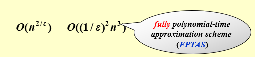
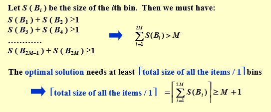
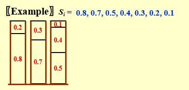
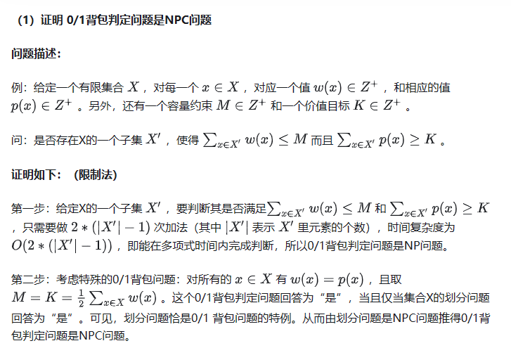
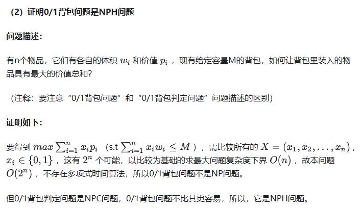
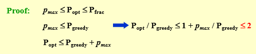
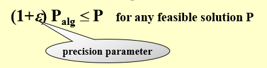
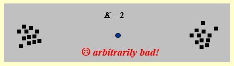

约 1730 个字 38 行代码 预计阅读时间 9 分钟
Chap 11 | “Approximation”
章节启示录
本章节主要介绍了近似算法相关的问题。我们知道对于一些较难的问题，给出严谨的多项式时间（即在所有情况下都是多项式时间）是很困难的，因此我思考去寻找近似的算法对之进行替代。启示录写的真的是越来越简略了
1.目标与标准¶
- What for? 对于某些问题，我们无法使用多项式时间解决。因此我们尝试寻找一种多项式算法，使得最后的结果在一个可接受的偏差范围内。
-
标准（Approximation Ratio）：近似比
\(\large max(\frac{C}{C^*},\frac{C^*}{C}≤\rho(n))\)
优化问题的近似方案是一种近似算法，它不仅将问题的实例作为输入，而且还将值 $ \varepsilon> 0$ 作为输入，因此对于任何固定 \(\varepsilon\) ，该方案是 \((1+ \varepsilon)\) 近似算法。
如果对于任何固定的 \(\varepsilon > 0\)，该方案在其输入实例的大小 n 中按时间多项式运行。我们就称近似方案是a polynomial-time approximation scheme（PTAS）（多项式时间近似范式）
近似范式
近似范式(approximation scheme)指的是对于某个优化问题的一族相同模式的算法，它们满足对于确定的 \(\varepsilon > 0\)，算法的近似比为 \(1+\varepsilon\)。
- 当 \(f(n,\varepsilon)\) 关于 \(n\) 是多项式时，我们称其为多项式时间近似范式(polynomial-time approximation scheme, PTAS)。
- 当 \(f(n,\varepsilon)\) 关于 \(n\) 和 \(1/\varepsilon\) 都是多项式时，我们称其为完全多项式时间近似范式(fully polynomial-time approximation scheme, FPTAS)。

2.装箱问题¶
给定 \(N\) 个大小为 \(S_1 ， S_2 ， ...， S_N\) 的物品，使得 \(0 < S_i ≤ 1\) 对于所有的 \(1 ≤ i ≤ N\) . 将这些物品包装在最少数量的箱子中，每个箱子的最大容量都是 \(1\)。
一个例子🌰
给定 7 个item ，size 分别是 0.2 , 0.5 , 0.4 , 0.7 , 0.1 , 0.3 , 0.8 ,那么最少需要 3 个箱子。
- bin 1 : 0.2 + 0.8
- bin 2 : 0.7 + 0.3
- bin 3 : 0.4 + 0.1 + 0.5
注意
装箱问题是一个 NPH 问题，但装箱问题的判定问题是一个 NPC 问题。
Decision problem: given K bins, can we pack N items?
在介绍具体的方式前，我们先对其进行一个分类：在线算法（online algorithm）和离线算法（offline algorithm）
- 在线算法：输入是一个一个知道的，也就是一开始只知道第一个，随着进程进入才知道后面的部分
- 离线算法：输入是一下子全部知道的，也就是一开始就知道所有物品的size，可以进行更加合理的安排布置。
2.1 Next Fit（online）¶
void NextFit ( )
{ read item1;
while ( read item2 ) {
if ( item2 can be packed in the same bin as item1 )
place item2 in the bin;
else
create a new bin for item2;
item1 = item2;
} /* end-while */
}
NF 策略的箱子个数不会超过 \(2M-1\)，其中 \(M\) 表示准确解。
证明
证明当 NF 的结果为需要 \(2M\) 或 \(2M+1\) 个 bin 时，准确解为至少需要 \(M+1\) 个bin。

2.2 First Fit（online）¶
void FirstFit ( )
{ while ( read item ) {
scan for the first bin that is large enough for item;
if ( found )
place item in that bin;
else
create a new bin for item;
} /* end-while */
}
FF 策略总是使用不超过 \(\lfloor 1.7M \rfloor\) 个 bin，并且存在一组能对边界取等的输入
2.3 Best Fit（online）¶
BF 策略总是选择能够容纳当前 item 且剩余空间最小的 bin（即 tightest），若所有 bin 都无法容纳当前 item，则新开一个 bin。 BF 策略也总是使用不超过 \(\lfloor 1.7M \rfloor\) 个 bin，并且存在一组能对边界取等的输入。
2.4 First Fit Decreasing（offline）¶
离线做法的优势在于它能够获得所有 item 的信息以求统筹规划。这里给出的近似做法是，将 item 按照 size 降序排序，而后使用 FF（或 BF，由于单调性，两者等价）。

FFD 策略总是使用不超过 \(\large \frac{11}{9}M+\frac{6}{9}\)个 bin，并且存在一组能对边界取等的输入。
3.Knapsack Problem（背包问题）¶
问题描述：要打包容量为 \(M\) 的背包。 给定 \(N\) 个项目。 每个项目 \(i\) 都有一个权重 \(w_i\) 和一个利润 \(p_i\)。 如果 \(x_i\) 是被打包的物料 \(i\) 的百分比，则打包的利润将为 \(p_ix_i\) 。
3.1 Fractional Version（可以装0.1个物品，连续可分）¶
\(x_i ∈ [0,1]\) ，我们可以很自然地想到用性价比（profit density）最优策略进行选择，即 \(p_i/w_i\)。这样得到的答案是准确解。
3.2 0-1 Version¶
\(x_i∈{0,1}\)，一个物品要么选要么不选。这是一个 NPH 问题，w我们可以近似算法来求较优解。
拓展：背包判定问题与背包问题
- 先给出结论，背包判定问题是NPC问题，但背包问题是NPH问题。证明
0/1背包判定问题:
给定一个有限集合 \(X\) ，对每一个 \(x∈X\) ，对应一个值 \(w(x)∈Z^+\) ，和相应的值 \(p(x)∈Z^+\) 。另外，还有一个容量约束 \(M∈Z^+\) 和一个价值目标 \(K∈Z^+\)。
问：是否存在 \(X\) 的一个子集 \(X^\prime\) ，使得 \(\large\sum_{x∈X^\prime} w(x)≤M\) 而且 \(\large\sum_{x∈X^\prime} p(x)≥K\)


贪心算法¶
我们可以使用贪心算法，贪心策略可以是总是选可以放得下的、还没放入中的，利润最大的或\(p_i/w_i\)最大的。这些做法的近似比都是 2。

动态规划算法¶
\(W_{i,p}\) 为总利润正好是 \(p\) 的最小权重集合。 $$ W_{i,p} = \begin{cases} ∞ &(i=0)\\ W_{i-1,p} &(p_i>p)\\ min\{{W_{i-1},w_i+W_{i-1,p-p_i}\}} &(otherwise)\\ \end{cases} $$
$$\large i=1,…，n;p=1,…,n \;\;p_{max} \Rightarrow O(n^2\;p_{max}) $$ * 注意：input size包括 \(\large p_{max}\) 的二进制编码长度 \(d\)，所以 \(\large p_{max}=O(2^d)\) 是指数级的复杂度。
伪多项式时间算法
- 多项式时间算法：根据输入的数量
- 伪多项式时间算法：根据输入中最大数的数量级
- 当一个算法的最坏时间复杂度是依据输入的数量级的时候，我们就称算法的时间复杂偶是伪多项式时间。
- 给一个wiki上的解释可能更好理解：若一个数值算法的时间复杂度可以表示为输入数值规模N的多项式，但其运行时间与输入数值规模N的二进制位数呈指数增长关系，则称其时间复杂度为伪多项式时间。这是由于，N的值是N的位数的幂，故该算法的时间复杂度实际上应视为输入数值N的位数的幂。
背包问题实例的规模是它的参数所占的存储空间。那么动态规划中的 \(\large p_{max}\) 所占用的空间便是 \(d\) 位。因此动态规划算法也是一个伪多项式时间算法。 相关链接
因此，如果 \(\large p_{max}\) 很大，可以考虑将他们除以一个较大的数（比如十万），然后向上取整，再进行运算。但是这个带来了精度的损失，我们用 \(\varepsilon\) 来表示。也就如下图所示：

4.The K-center Problem¶
选择 \(K\) 个中心 \(C\) ，使得最大距离（最大半径）的值最小。
即：
设 \(C = \{c_1,c_2,…,c_k\}\) 为 \(k\) 个 center， \(S=\{s_1,s_2,…,s_n\}\) 为 \(n\) 个site，我们定义site到center的距离的集合 \(C\) 为:
$$\large
dist(s_i,C)=min_{c_i∈C}\{{dsit(s_i,c_i)\}}
$$
定义最大的最小覆盖半径为:
$$\large
r(C)=max_{s_i,S}\{dist(s_i,C)\}
$$
我们的目标是寻找一个集合 \(C\) 使得 \(r(C)\) 最小。（约束条件是集合 \(C\) 的基数等于 \(k\)）
4.1 简单的贪心策略¶
一个简单的想法
将第一个中心放在所有点的中心位置，然后不断添加中心，以使得每次尽可能减小覆盖半径。
- 如果是第一个点，就选取所有点的中心；
- 如果不是第一个点，就选取能一个最能让 \(r(C)\) 下降的；
这样的做法在某些情况是错误的，所以我们不再考虑这个方法。

4.2 2r-Greedy¶
正向思考这个问题有些难度，我们不妨反向来想，假设我们知道答案（或者说我们提前猜一个答案，给定一个约束的半径值 \(r(C^*)≤r(C_x)\)），也就是知道准确解 \(r(C^*)\) ，那么我们就有 \(r(C^*)≤r(C_x)\)，在这里 \(r\) 成为了一个约束条件！ 于是我们将按照 \(K\) 和 \(r\) 这两个约束条件去寻找点。
- 首先我们引入一个定理：
引理
假设给定半径为 \(r\) ，以 \(c\) 为圆心的圆 \(C\) 覆盖了 \(S\) 中d的所有点。
那么，对于固定的半径 \(r^\prime\) ，要想取任意的 \(s_i∈S\) 为圆心，形成对的圆 \(C_i\) ，总是能覆盖 \(S\) 中的所有点，则 \(r^\prime≥2r\)。
这个结论是比较显然的，大家可以想象一下有两个点分别在直径两端。
- 伪代码：
Centers Greedy-2r ( Sites S[ ], int n, int K, double r ) { Sites S’[ ] = S[ ]; /* S’ is the set of the remaining sites */ Centers C[ ] = 空集; while ( S’[ ] != 空集 ) { Select any s from S’ and add it to C; Delete all s’ from S’ that are at dist(s’, s) ≤ 2r; } /* end-while */ if ( |C| ≤ K ) return C; else ERROR(No set of K centers with covering radius at most r); }
此时我们发现了一个问题， \(r(C^*)\) 我们实际上是不知道的！那么我们接下来的做法就是去猜！也就是我们猜测一个较为合理的约束条件，去逼近真实值。提到逼近，很自然就会想到二分法了。
我们令 \(r_{max}\) 为距离最远的两个 site 的距离。
- Guess:\(\large r = (0+r_{max})/2\)
- Yes:K centers found with 2r
No:r is too small
准确解 \(r\) 的范围在 \(r_0<r≤r_1\)
我们得到的解是 \(r_1\)
4.3 A smarter solution — be far away¶
这个做法其实有点像上面那个做法的反向思路。上面是不断寻找符合要求的，而这个是一旦不符合要求就返回。
我们关注到，上面那个做法总是随机的选取新的 \(c_i\)，但是对于 center 的选取，我们其实可以总是选择距离已有的 center 最远的点，此外，当 \(∣C∣>K\) 时，我们也没必要继续做了。
证明
使用反证法证明。若结果 \(r>r*\) ，则每步添加的 \(s\) 距离都大于 \(2r*\) 。根据前一个算法的结论， \(S’\) 在 \(K\) 步以内必然非空，推出 \(K-center\) 无解满足 \(r*\) 。
- 伪代码：
这里一开始对初始点的选取是任意的，但若对其做一些限定，相信结果会更加准确。
5.总结¶
我们需要从三个维度来考虑算法的设计是否优秀：
- 最优性(optimality)：即能求准确解；
- 高效性(efficiency)：即算法是否高效；
- 普遍性(all instances)：即算法是否普遍适用于所有的情况
同时满足最优性和高效性，那么这个算法对特殊情况能高效求准确解；
同时满足最优性和普遍性，那么这个算法对所有情况都能求准确解；
同时满足高效性和普遍性，那么这个算法可能是个近似算法；
- 即使 N=NP 成立，我们仍然无法保证三个愿望一次满足。这句话指的应该是对于 NPH 问题，我们依然无法保证三个性质同时成立。